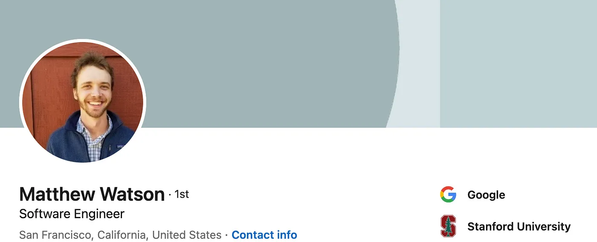

by Anshuman Mishra & Abheesht Sharma
The AI world is brimming with talent. Folks in the AI industry and the research world are continuously pushing the boundaries of innovation. With this interview series, we want to focus on bringing these inspiring (and possibly unheard-of) stories out into the world — their struggles, their triumphs, and their journey. We will be conversing with people we have looked up to and still look up to for their unparalleled contributions to the AI world. We call this interview series AI Chronicles.
In this installment of our series, we sit down with Matthew Watson for a chat. Matt, a Stanford CS alumnus, is a software engineer with the Keras team at Google, where he works on KerasNLP, Keras’ native NLP offering. He has also been instrumental in developing Keras 3 (its announcement created significant buzz on Twitter!), a multi-backend Keras that can run on TensorFlow, JAX, and PyTorch. In the past decade or so, Matt has already had a wonderfully diverse career — he started off with literature in his undergrad, before developing a love for CS (more on this in the interview!).
All words seem inadequate when one sets out to describe Matt. Matt is one of those “10x” engineers/researchers and always has a solution to every problem. We have always found his intuition to be bang on target. Matt has played a pivotal role in both of our careers; he has mentored us during (and after) Google Summer of Code. But one needs to look beyond just his technical expertise. Matt has infinite patience; we’ve spent late-night debugging sessions with him, and he has always been super-helpful and giving. Matt is an “open source stan”, and you can see his love for open source in every response of his on GitHub, and in every meticulously drafted PR (Pull Request). Safe to say, Matt has influenced us like no one else.
Let’s begin!
Anshuman & Abheesht: Welcome, Matt! Thanks for doing this.
Matt: Hi Anshuman and Abheesht! And thanks for putting this whole series together. I should probably quickly note that opinions here are my own; I’m not speaking on behalf of Google or any organization.
Anshuman: Can you tell us about your journey in the field of natural language processing (NLP) and how you became involved with the Keras team at Google?
Matt: Honestly I have taken a meandering path, but two consistent threads I can pick out of the last decade of my career are a love of language and of open-source software.
I started my undergraduate studies with a focus on literature before getting lured to Computer Science by some really fantastic teachers. Through that switch, I have remained fascinated with the intersection of language and math. My first hands-on experience with NLP was helping with a research project at my university extracting information from Wikipedia via support vector machines written in Java (times have changed!). I started using Keras in 2017 when everyone was discovering text generation with LSTMs.
I’ve had the chance to spend most of my career so far working in open source (first in the Linux community and now ML) and have always been so grateful for it. So joining Keras honestly felt like a no-brainer; it was a chance to do open work on my interests with a library I already loved.
Abheesht: I’d like to talk a bit more about the career pivots you’ve done. In school/college, you say that you were interested in literature, post which you pivoted to Computer Science. Even in the field of Computer Science, you started off with Computer Graphics, started working on building an operating system at Endless Computers, and worked in the Firebase team, before joining Keras. How much did learning/working in different “disciplines/fields” help you? Were there any opportunities for “cross-discipline” learning, say, something you learned from discipline A which helped you in discipline B?
Matt: I’m really glad I got a start in the humanities because writing is so important for almost every field. Being able to articulate a thought clearly and concisely is an important skill we underplay too often in the hard sciences.
Computer graphics and the ML work I’m doing today feel closely intertwined. My advisor for my Master’s degree, Pat Hanrahan, was a driving force behind programmable shading language, and that blows my mind to this day. The early days of GPUs were all about these fixed-function pipelines for creating and rasterizing triangles. Then came the idea to write these domain-specific shading languages that added a ton of expressivity to the process. And from that came the idea of general-purpose GPU computations, and things like CUDA, and here we are today! ML as a field has probably been moved forward literal decades thanks to ideas from the graphics world.
I’m grateful for my time in the Linux open-source world for quite different reasons. I can’t say there’s much overlap in subject matter, but it was a wonderful start in the world of open source. It definitely made me a bit of a tinkerer, with everything from my OS to shell to IDE. Linux is built around supporting that. But it’s something I think equally applies to the world of ML. The deeper you get into these big deep-learning frameworks the more clear it becomes they all have bugs. You gain so much as an ML developer when you can get into the weeds of a library and start changing things.
Anyway, that’s a long-winded way of saying I’m quite glad my career hasn’t been a straight line.
Anshuman: Given your interest in English literature, which novels are you currently reading? What’s on your to-read list? Do you have any writing aspirations?
Matt: Hah, for any attempt to read literature with a capital “L” in school, my reading diet since I was 10 has been mostly sci-fi and fantasy. Ursula K. Le Guin is a big hero of mine. I recently read Klara and the Sun, a dystopian novel narrated by an “autonomous friend” that certainly feels relevant to all the work we do.
I would love to try my hand at fiction someday, but most of my writing is technical these days.
Abheesht: What are the focal attributes of KerasNLP that make it different from other NLP libraries out there?
Matt: One thing that makes Keras unique is a detailed and strict style guide for any new API. Our top-level APIs should be accessible to a very broad audience. We achieve flexibility underneath this top level with a focus on modular components and layered abstractions.
This gives KerasNLP a somewhat unique positioning among “pre-trained modeling” libraries. When we port a model from a research codebase, we tend to heavily rewrite the forward pass so it matches our conventions and uses common building blocks.
This has some neat side effects. For one, it’s a great library to learn from–you can define a transformer from scratch with our base layers in about 20 lines of code. It also gives a very uniform experience of slicing and dicing our models. That’s a big one given how many real-world workflows, from PEFT strategies to interpretability techniques, require reaching into model internals.
Abheesht: How do you see the current landscape of NLP and deep learning evolving, and how does KerasNLP fit into this evolving landscape?
Matt: It’s dizzying how fast the field is changing these days. There is a ton of energy in open-source NLP development. There are so many valid concerns with how all this new technology is being used. At a broad level, I keep trying to remind myself what a massive period of flux this is for the field. We should all hold our opinions lightly and stay curious.
I think multi-backend Keras 3 is really a game changer for how KerasNLP fits it. On the KerasNLP side, we can take a pre-trained model, write our numerics once, and distribute our weights once. You can fine-tune a model in any of TensorFlow, Jax, or Torch, and use Keras’ save format as a way to seamlessly move between frameworks. I think this is a new tool we are putting in ML developer’s toolboxes, and I am excited to see what people do with it.
Anshuman: Could you share some real-world applications or projects where KerasNLP has been particularly instrumental or innovative?
Matt: One of the first projects to use KerasNLP is the AutoKeras library, and I really love how it fits into the Keras broader Keras ecosystem. It’s a super accessible, code-first library. You can just define your data and problem and it will handle choosing an architecture, optimizer, and hyperparameters. Or you can define your own much more complex and tailored workflow as you get deeper in.
I think there is a huge opportunity to take a similar approach to generative problems going forward. Meet people with accessible, understandable, code-first flows that still give you full control over an underlying language model when you need it. I haven’t quite seen an “auto ML” offering on the generative modeling front that has really blown me away, but I would bet it’s just a matter of time.
Abheesht: Natural language understanding and generation have seen remarkable advancements. What do you think are the key challenges and opportunities in NLP today?
Matt: There’s a huge amount of opportunity here. We are far from understanding all the ways we can put the emergent properties of LLMs to use. Given the amount of investment and attention, I am not particularly worried about the field suddenly losing steam.
An obvious challenge is the reliability of language models. If you had a service where a fellow human would often give you helpful advice, and occasionally confidently lie to your face, people would be out there flipping tables.
I think there are two things we could do here. First, keep working on the engineering problem of reliable models that can, at least, indicate uncertainty when present. Second, don’t oversell these things! There are a lot of unsolved problems with LLMs, and there is a persistent, magnetic attraction towards anthropomorphizing something that appears to understand language. Everyone working in this space needs to be careful with how we describe these systems, and continually flag the obvious limitations of these tools.
Abheesht: One thing I’ve seen with the Keras team is the collaborative culture that has been fostered. All members of the Keras team are very helpful to the outside community. Evidence of this is seen in the number of students who contribute to the Keras ecosystem. Can you provide insights into the collaborative development process within the Keras team at Google and outside contributors and how it contributes to the library’s success?
Matt: A huge reason I was attracted to the Keras team was that everyone on it really cares about open-source tools, not as an afterthought or a way to boost your profile, but as an end unto itself.
The vast majority of my work is out in the open on GitHub, and I think that is true of the whole Keras ecosystem. Most real discussion about new APIs is happening on issues and pull requests.
I think everyone on the team really believes in the virtuous cycle here. There is far more knowledge and skill in the large pool of Keras users than just the Keras team at Google.
Anshuman: In the ever-evolving field of AI, staying updated is crucial. How do you personally keep up with the latest developments and trends in NLP and deep learning?
Matt: It’s a mix right now of Twitter, word of mouth, and anything that naturally comes up in my work. There is just no way for anyone to ingest all the research in this space. I constantly try to curate a short list of concepts to understand deeply, rather than attempting to ingest the whole fire hose.
If I encounter a new claim that breaks an assumption I was holding, or a bug in my code I can’t effectively explain, it’s almost always worth digging in. ML as a field I think really rewards going deep on unknowns and constantly leveling up your understanding.
Anshuman: You’ve done your Bachelor’s and Master’s from Stanford, widely regarded as one of the best universities in the world. How was your time at Stanford? How do you think your education has shaped your career as an engineer over the past decade? What makes Stanford Stanford; what does Stanford do differently from other universities that makes it the best? Is it the faculty? Is it the peer group?
Matt: The main thing I think Stanford provided was this massive playground to go out and build your own understanding. They give a lot of resources and freedom to students, and there’s a lot of bright people trying weird stuff you can talk to. There’s definite energy in that environment.
Stanford also killed it with the introductory Computer Science courses. The lecturers and teaching assistants were really supportive and focused on sparking curiosity about what computers can do. That is for sure what lured me out of the social sciences.
I wouldn’t put too much stock into any one place though. The best coworkers in my working life have truly come from all sorts of educational backgrounds; I cannot pick out a pattern. People who teach themselves and even get a bit irritated by things they don’t yet understand tend to make great engineers. And open source in particular is one of the most accessible ways to wade into real problems from anywhere in the world.
Abheesht: What, do you think, is the future for KerasNLP? Where do you see it going? What are some exciting developments that are planned in the near future?
Matt: The near future for KerasNLP is all about sticking the landing with Keras 3 (multi-backend Keras). We want to make sure we have the models people are most excited about (e.g. LLama 2 and Falcon), but equally important is a good ecosystem of tools to scale these models up and down.
On the scaling down front, we want a good multi-backend workflow for LoRA, and for scaling up, we are working on some dead simple model parallelism (think sharding individual matrices across GPUs). It’s definitely a lot to execute on, but that’s kinda fun. We are all heads down on our projects till the release of Keras 3 later this year.
Abheesht: Having talked to you before, I know how bullish you are on open-source software. Is open source the way forward with LLMs? The upsides are obvious; the downsides include potential misuse, etc. What are your views on this?
Matt: I think the biggest thing we can all do is stay open to changing our viewpoints. We are way out in uncharted territory in terms of model capability, so the most accurate (and maybe unhelpful) thing we can say is that we don’t know what the biggest risks are or how to mitigate them.
I should probably just recuse myself from any conversations of existential risk from language models; I don’t know enough. I am glad some people out there are thinking about it, but personally, I am much more worried about the more immediate societal issues–bias, misuse, misinformation, disruption from automation, etc. These I feel strongly need to be addressed in the public square, and open models will be an essential tool.
First, with an open model, you can crowdsource finding all the issues and fail states. More people probing a model will do a much more thorough job of making it “misbehave.” Second, if we really open up the whole training recipe (what data is going in?!), we can have a much more open conversation about equitable outcomes with this new tech.
I think we have a ways to go as a field, particularly with opening up details on training data. We also need to avoid a “race to the bottom,” just throwing more in more compute and data to beat benchmarks without understanding what we are scaling to. But if we want this new tech to do right by society at large, I think open models have a large role to play.
Abheesht: Keras 3, i..e, multi-backend Keras which allows users to switch backends (TensorFlow, JAX, and PyTorch) was released to much hubbub and fanfare a couple of months ago. What do you think are some of the most exciting use cases of a multi-backend Keras? Why should people be excited about it?
Matt: Maybe a bit abstract, but I think Keras has the opportunity to become a “lingua franca” for modeling problems for a lot more people with Keras 3. Keras is a familiar API to basically everyone in the ML field–even if you don’t realize it, its fingerprints are all over abstractions in so many deep learning toolkits.
With Keras 3, you can start with a backend agnostic modeling flow, and “lower” it into TensorFlow, JAX, or PyTorch anytime you need. There’s no transpilation, all layers/metrics/optimizers are using backend native calls for the selected framework. So basically Keras just becomes an incredibly efficient thing to learn. You can use it as a diving off point for basically any ML problem, and have the expressivity of a low-level framework as soon as you need it.
Abheesht: What is one research paper you’ve read recently that gave you that “aha” feeling? Basically, a paper that blew your mind!
Matt: A while ago I was in a paper reading group digging into graph neural networks. I found the notions of message passing and permutation invariance among graph vertices to be this big lightbulb moment where a lot of disparate notions in my head suddenly coalesced.
Basically, you can think of CNNs and Transformers, and RNNs as graph networks. A convolution is just a message passing among neighboring pixels. Transformers are quite literally densely connected graph attention networks, with positional information added in.
Framing everything as a graph gives you this uniform lens to look across the whole field of deep learning, which is so cool. This article is a good introduction to the idea.
Anshuman & Abheesht: Thank you, Matt! It’s been great talking to you!
And that concludes the third interview of our “AI Chronicles” series! This series is a joint effort of Anshuman Mishra and Abheesht Sharma. Anshuman is currently working at Flip as a Machine Learning Engineer. Abheesht is an ML Research Scientist at Amazon, where he works on detecting advertisement bots. Both of them contribute extensively to ML open-source software and have been involved in developing KerasNLP.
Best regards and happy learning!